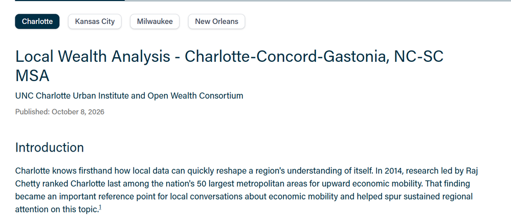
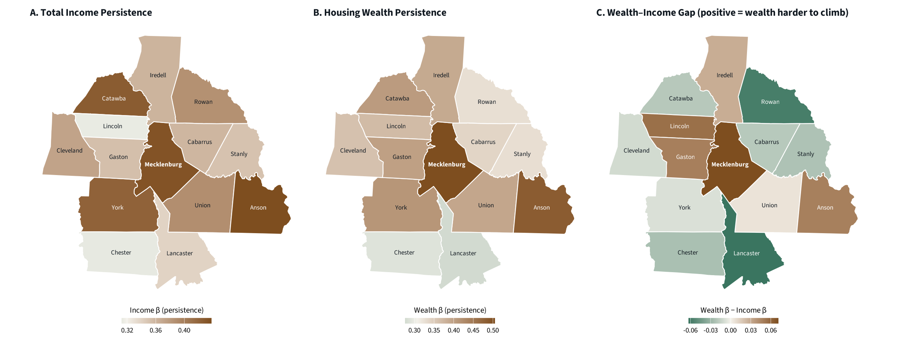
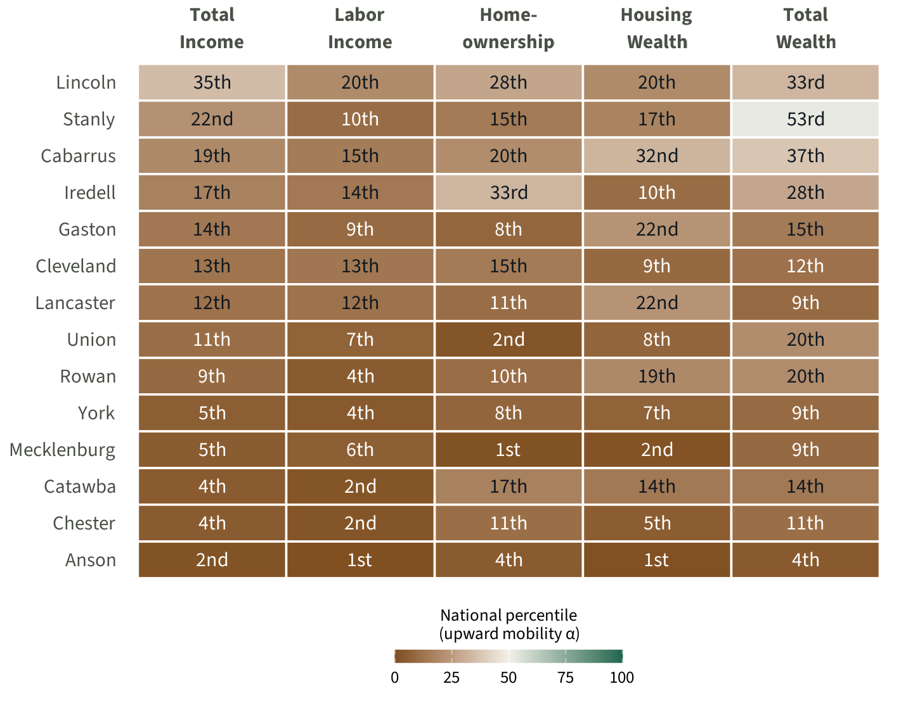
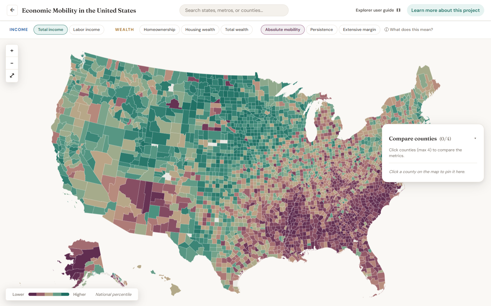
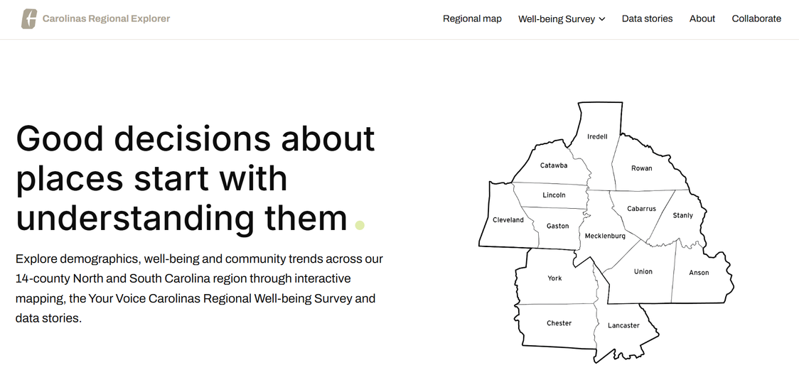

Our work with the Open Wealth Consortium, and where it goes next
Liz Morrell, Ph.D. Director of Public Policy Research
Kailas Venkitasubramanian, Ph.D. Director of Data Analytics
October 2026
The Charlotte-Concord-Gastonia metro has a public wealth profile at openwealthdata.org.
That puts Charlotte alongside partner analyses from The Data Center (New Orleans), Data You Can Use (Milwaukee), and Kindred Futures (Roots of Wealth).
The profile is the first local wealth data the region has had.

A local wealth profile of the Charlotte metro, and a county-level look at wealth mobility across the 14-county region.
| Householder | Median income | Median net worth |
|---|---|---|
| White | $67,800 | $172,000 |
| Asian | $95,000 | $133,000 |
| Hispanic | $45,500 | — |
| Black | $40,400 | $8,000 |
| All households | $58,700 | — |
White households' median net worth relative to Black households' in the Charlotte metro — against a 1.7× gap in income.
Median net worth, White vs. Black householders. Over half of Black householders this age hold under $7,000.
Wealth grows with age for both groups, but the distance between them grows too.
A degree raises wealth within every group, but older Black college graduates sit closer to White householders without a degree than to White graduates.
Owning a home is the biggest wealth boost in both groups, yet Black homeowners trail White homeowners at every age. Black households also carry higher debt-to-asset leverage.
Not only how much families hold today, but how much of it is passed down.
Kailas Venkitasubramanian, Ph.D. · UNC Charlotte Urban Institute
Raj Chetty and colleagues mapped intergenerational income mobility across every major U.S. metro from decades of tax records.
A child born in Charlotte's bottom income fifth had about a 1-in-14 chance of reaching the top fifth.
It launched Leading on Opportunity and a decade of investment in schools, early childhood, and jobs. All aimed at one thing: income.
Charlotte ranked last for upward income mobility.
Binder, Risch & Voorheis (2026), Lands of Opportunity, link Census, tax, and property records for 3.4 million families to estimate mobility for every U.S. county across five economic concepts.
All income: wages, business, capital, transfers. The classic measure.
Earnings from work alone: wages and salaries.
Whether a child owns a home at all: the door to wealth.
The value of the home owned as an adult.
Housing plus financial assets: stocks, retirement, business equity.
For the first time, we can ask: does wealth mobility look like income mobility?
wealth-β percentile: more persistent than 99.6% of U.S. counties
Charlotte joins Atlanta, Nashville, Austin & Raleigh: fast-growing metros where the housing market concentrates wealth rather than spreading it.


Each cell is a county's national percentile for upward mobility (α). Brown = below the median.
Rankings reshuffle depending on which concept you measure.
Homeownership is the weakest rung across nearly every county.
Mecklenburg: 1st percentile on homeownership, 2nd on housing wealth.
Every U.S. county · all five concepts · α, β, δ, colored by national percentile.
Next: bringing wealth mobility home to the Carolinas Regional Explorer.

The Carolinas Regional Explorer brings data on the 14-county region into one public place, for residents, community organizations, local leaders, and researchers.

Interactive quality-of-life indicators for every neighborhood across the 14 counties, North and South Carolina together.
The Your Voice Carolinas Regional Well-being Survey: residents' own views of their lives and communities, with a dashboard and report.
Narrative pieces that walk readers through the people, places, and issues of the region using the data.
We will continue to add data tools to the site to enhance its usability for the Charlotte region.
County-level wealth mobility and the wealth–income gap on the Regional Map.
Turn the wealth profile brief into a Data Story.
Put modeled wealth beside what residents say about financial security in the Well-being Survey, and beside the Zoning Atlas.
Charlotte as a model for how other partner metros can host consortium data.
Steeper line → more of your start is inherited → less mobility.